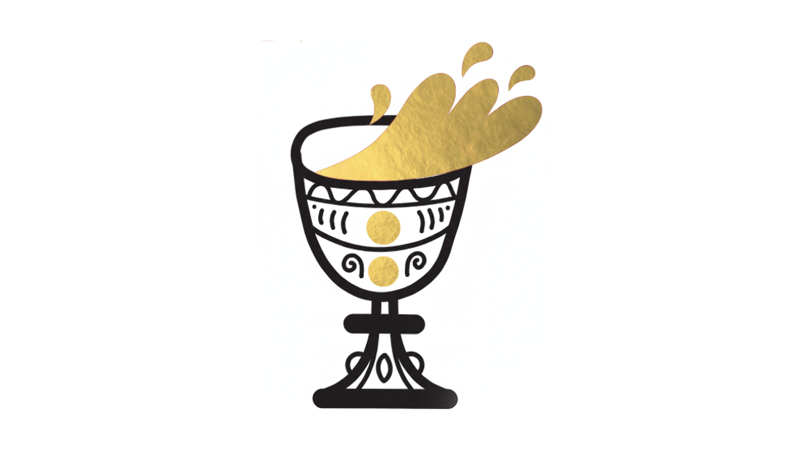

Upozornenie
Richard Müller – lístky vypredané
Koncert Richarda Müllera v Mestskom amfiteátri v piatok 12. septembra je vypredaný. Pár lístkov ešte môžete nájsť na Maxiticket.sk – sledujte stránku, niekedy sa uvoľnia vrátené vstupenky.